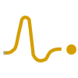

I.
About
I’m Hao Zhu, postdoctoral fellow at the Brain and Mind Institute in the Department of Linguistics and Modern Languages at the Chinese University of Hong Kong. With a B.S. and Ph.D. in Neuroscience from New York University, my work centers on uncovering the neural mechanisms that underpin human speech and language.
My research focuses on how the brain constructs and navigates representations for language processing and production. I explore the complex motor–sensory transformations that enable us to translate thought into speech — the subtle neural choreography that governs this remarkable capability. I’m also fascinated by the potential of brain–computer interfaces to deepen our understanding of these processes and, in time, to restore communication where ordinary pathways are compromised.
To investigate these questions I employ advanced electrophysiological tools — electroencephalography (EEG), magnetoencephalography (MEG), electrocorticography (ECoG), and stereoelectroencephalography (sEEG). Each lets me trace the brain’s activity at high spatiotemporal resolution, mapping the pathways that turn intention into language and language into sound.
Speech is the brain’s most public act, and its most quietly engineered one.
I.a
Research interests
-
i.
Speech & Language
How the brain constructs, interprets, and produces language across timescales — from phonetic features to meaning in context.
-
ii.
Motor–Sensory Transformation
The integration of sensory prediction and motor output during speech production, and the neural choreography that binds them.
-
iii.

Electrophysiology
Non-invasive and intracranial recordings (EEG, MEG, ECoG, sEEG) to probe brain activity at high spatiotemporal resolution.
-
iv.
Brain–Computer Interfaces
Decoding language directly from neural signals, with the goal of restoring communication for those who have lost it.